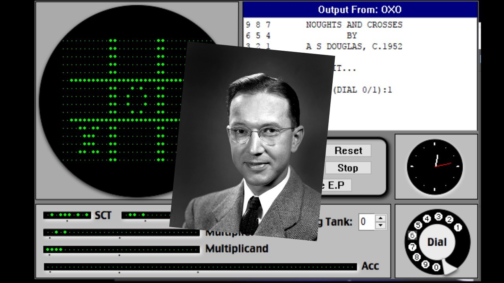

Современная цивилизация без компьютеров невозможна
-
Первая компьютерная игра
Первая компьютерная игра появилась в 1952 году. Её как иллюстрацию к своей докторской диссертации создал профессор Александр Дуглас. Игра называлась ОХО и была компьютерной реализацией игры “Крестики – нолики”. Игровое поле выводилось на экран разрешением 35 на 16 точек. Пользователь, игравший против компьютера, делал ходы с помощью телефонного диска.
